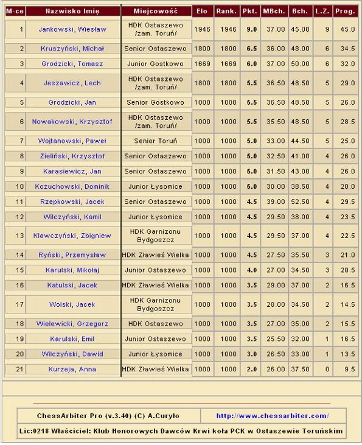

Aktualno¶ci
VI Mistrzostwa Województwa Kujawsko-Pomorskiego Krwiodawców
Ostaszewo 14.03.2009
Relacja: Czes³aw Karasiewicz
Sprawozdanie z turnieju szachowego "VI Mistrzostw Województwa Kujawsko-
Pomorskiego Krwiodawców" i "Mistrzostw Gminy £ysomice" juniorów i seniorów,
które odby³y siê w dniu 14.03.2009 roku w Szkole Podstawowej w Ostaszewie.
Organizatorem by³ Klub Honorowych Dawców Krwi ko³a PCK w Ostaszewie.
Tabela turniejowa

Puchary Urzêdu Gminy £ysomice zdobyli:
Indywidualnie Honorowi Dawcy Krwi:
I m-ce - Wies³aw Jankowski - HDK Ostaszewo /zam. Toruñ/.
II m-ce - Lech Jeszawicz - HDK Ostaszewo /zam. Toruñ/.
III m-ce - Nowakowski Krzysztof - HDK Ostaszewo /zam. Toruñ/
Dru¿ynowo Kluby HDK:
I m-ce -HDK PCK Ostaszewo - 20 pkt.
II m-ce - HDK PCK przy UG Z³awies Wielka - 10 pkt.
III m-ce - HDK PCK Garnizonu Bydgoszcz - 8 pkt.
Mistrzostwa Gminy £ysomice zakoñczy³y sie nastepujaco:
Seniorzy:
I m-ce - Kruszynski Micha³ - Ostaszewo.
II m-ce - Grodzicki Jan - Gostkowo.
III m-ce - Zieliñski Krzysztof - Ostaszewo.
Dru¿ynowo Seniorzy:
I m-ce - Ostaszewo - 16,5 pkt.
II m-ce - Gostkowo - 5,5 pkt.
Juniorzy:
I m-ce - Grodzicki Tomasz - Gostkowo.
II m-ce - Ko¿uchowski Dominik - £ysomice.
III m-ce - Wilczyñski Kamil - £ysomice.
Dru¿ynowo Juniorzy:
I m-ce - £ysomice - 12 pkt.
II m-ce - Ostaszewo - 7,5 pkt.
III m-ce - Gostkowo - 6 pkt.
Puchary dla Du¿yn HDK PCK ufunowa³ Klub HDK Ostaszewo.
Sponsorami nagród byli:
"INTER BROKER" - Toruñ,
Robert Ko¿uchowski - £ysomice,
"Sharp Manufacturing Poland" Sp. z o. o. - Ostaszewo,
Pañstwo Mariola i Piotr Czajkowscy z Papowa Toruñskiego,
"STEX Janiszewscy" Spó³ka Jawna Wytrêbowice,
Urz±d Marsza³kowski woj. Kujawsko-Pomorskiego i Urz±d Gminy £ysomice.
Prezes Klubu HDK PCK w Ostaszewie oraz Przewodniczacy Rejonowe Rady HDK
w Che³m¿y Czes³aw Karasiewicz.
Zdjêcia z Turnieju
|